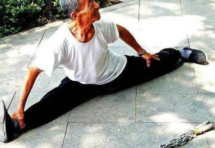

To the martial artist, Energy manifests within each individual as spirit, spirit manifests in each individual as mind. This Energy or (Chi) as it is known in China, or (Ki) in Japan, permeates everything, and hence is both the martial artist’s strongest connection to his enemy as well as his strongest weapon against his enemy.
The mastery of this energy is a central element of all traditional forms of Martial Arts practice. Two widely recognised expressions of this ideal are the Chinese art of Tai Chi Chuan, and the Japanese art of Aikido.
Tai Chi Chuan integrates many elements of Chinese culture such as philosophy and religion, medicine, and military practice. It draws its inspiration for movement heavily from the philosophy of yin and yang. It incorporates the theory of the Five Elements of cosmology and the principles of the Bagua (Eight Trigrams) together with motion, creating a continuous flow of movement that reflect the ideas behind these ideologies.
The Yin-Yang symbol, which is often linked with Tai Chi Chuan, represents the interaction of Yin and Yang. Yin and Yang are shown in equal amounts, yet the Yin portion of the Yin-Yang contains a small amount of Yang and the Yang portion an equally small amount of Yin.
The ancient Chinese saw the universe as a vast unity with every part of it being related to and dependent on every other part. Within this unity, there is continual change in an endless cycle between two partners, the Yin (feminine, dark, soft, yielding) and the Yang (masculine, hard, aggressive).
The universe is entirely made from these two forms of energy and in order for all things to progress harmoniously, the forces of Yin and yang must constantly interact with each other. While doing so, each must evolve, over a period of time, into its opposite, just as day gradually turns to night. For this reason, everything that seems to be Yin contains some Yang and all that is Yang also contains some Yin, without which change would not be possible. (Chen Lei)
From this view of existence and energy, the style of Tai Chi Chuan was constructed. It is a perfect physical expression of the Yin-Yang philosophy and operates within the same parameters and limitations.
While other martial styles are violently fast and rigid, Tai Chi is slow and controlled, with techniques that flow endlessly into one another. Just as Yin-Yang energy maintains a continual flow, so does the Tai Chi form. There is no rigid stop-start, only a controlled natural mimic of energy. This is why Tai Chi is often seen as one of the most graceful and peaceful Martial Arts. Just as energy is circular in flow, all Tai Chi footwork is circular in direction, and just as energy is a natural phenomenon, the Tai Chi defence postures are always in a natural form, not rigid, boxing-like military stances.
The effective practice of Tai Chi relies on a pure and deep understanding of the Yin-Yang/ Tai Chi view of Chi and the universe. Without this spiritual dimension to the art, the student is not practicing Tai Chi, they are simply performing empty movements of little significance to themselves or the world around them.
Another art dealing with the dynamics of energy was founded by Ueshiba Morihei in 1942. The Japanese art of Aikido was considered a continuation of the Samurai Arts, and borrows much of its spiritual dimension and expression from Bushido (The Way of the Samurai), particularly its use of traditional sword practices. It is a relatively contemporary system and much a continuation of Japanese values and culture as it is a cultivation of philosophy and spirit.
The meaning of Aikido is literally the (artful path of discovery of gathering Ki). Ki is the Japanese translation of Chi, and shares an identical definition. It is suggested that Ki was (born) at the same instant as the rest of the universe, and that we are all born from the Ki of the universe. All living organisms have equal access to Ki, and it will course through our system if we allow it. Daily Aikido practice is primarily directed at maintaining a balanced state physically and emotionally, and practicing ways to cultivate this energy.
Like Tai Chi, Aikido is a physical expression of this way of seeing the world. As a result, it has no attack form, because attacking an opponent would be like attacking a family member or damaging the flow of Universal Ki energy sustaining the world. Once again, because Ki moves constantly, so does the martial artist, with all of Aikido’s footwork occurring in circular patterns. Aikido also places great attention on the balance aspect of energy, and hence has created an awareness of balance essential to its maneuvers. The main techniques of the style involve particular throwing and wrestling patterns that are precisely dependent on the perfect balance of its practitioner.
In Aikido like all Martial Arts, physical and emotional balance is codependent. Physical balance helps to engender emotional balance. An understanding of the nature of our spirit will help the practitioner create an effective alignment of thought and action. When every aspect of the individual is aligned the individual is better able to adapt and change.
Back